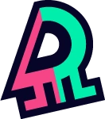
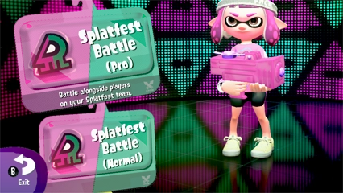
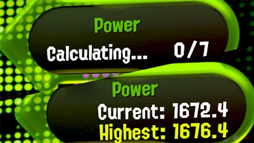
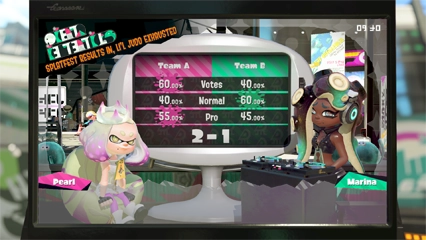

Combates temáticos

Los combates temáticos son combates territoriales especiales en los que dos equipos luchan por hacer valer su voto. En función de los resultados, se concederán puntos, que luego servirán para incrementar el rango. Tras concluir el festival, los participantes recibirán supermoluscos en función de su rango y equipo. Existen dos modalidades de combates temáticos: ¡normal y desafío!
Modalidad normal

En estos combates puedes participar por tu cuenta o bien unirte a entre uno y tres amigos que sean de tu mismo bando en el festival. A todas las bonificaciones obtenidas se sumará lo que hayan entintado, para así calcular la aportación. Si tu equipo ha logrado varias victorias consecutivas, jugarán contra otros equipos que lleven rachas similares.
Modalidad desafío

Esta modalidad va dirigida a jugadores que quieran ir más allá de sus propios límites por su cuenta. Se te evaluará según la fuerza lograda en el festival. Si obtienes la suficiente, ¡quizá aparezcas entre los 100 mejores!
Tu aportación en esta modalidad aumenta al derrotar oponentes: será más alta cuanto mayor sea la energía de tus rivales.
Tu aportación en esta modalidad aumenta al derrotar oponentes: será más alta cuanto mayor sea la energía de tus rivales.
Resultados

Los resultados del festival se basan en tres factores: votos, la aportación total en la modalidad normal y la aportación total en la modalidad desafío.
Aunque la opción que hayas votado no gane en número de votos, es posible que la aportación total de cada modalidad acaben inclinando el resultado a tu favor.
Los participantes del lado ganador recibirán más supermoluscos como recompensa.
Aunque la opción que hayas votado no gane en número de votos, es posible que la aportación total de cada modalidad acaben inclinando el resultado a tu favor.
Los participantes del lado ganador recibirán más supermoluscos como recompensa.